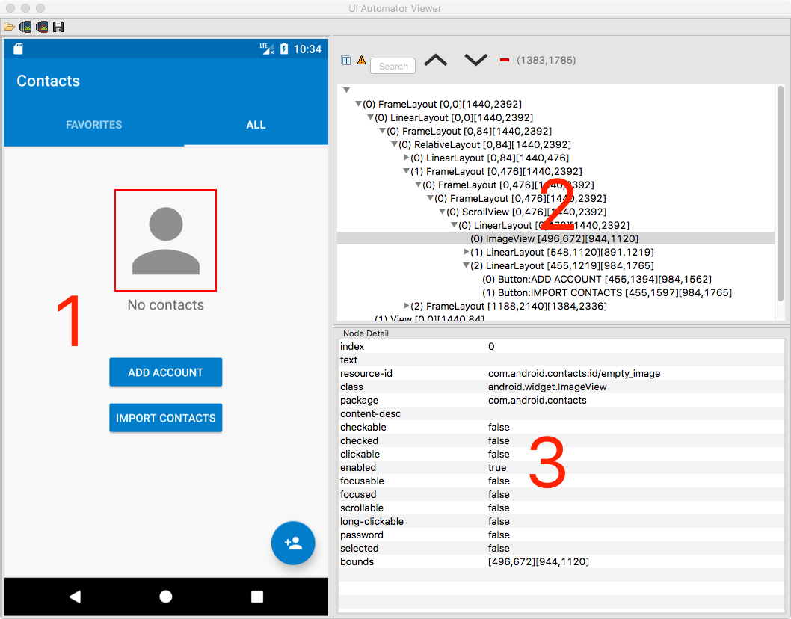
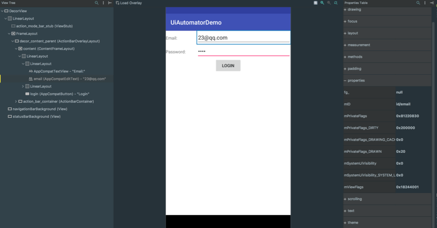
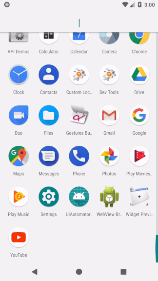
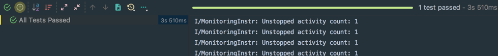

自动化测试作为软件开发中不可或缺的一部分，其重要性不言而喻。自动化测试可以分为黑盒和白盒测试。而本文则是对黑盒测试框架 UI Automator 的学习做一个笔记并分享，希望可以帮到你。
接触自动化测试也一年左右了，刚开始半年时间主要做自动化测试，从一无所知开始自己摸索，慢慢有了一些门道，直到现在才能进行一些简单的总结。本文先从最开始接触的 UI Automator 自动化框架说起。
UI Automator综述
UI Automator 是一套黑盒UI自动化测试框架，具有灵活性强、支持跨进程进行自动化测试、不依赖源码等优点，在自动化测试领域占有很重要的位置。UI Automator 测试框架非常适合编写黑盒自动化测试，其测试代码不依赖于目标应用的内部实现逻辑，只测试和用户交互想过的部分。
UIAutomator必须在 Android4.3(API18) 以上运行。
UI Automator框架
UIAutomator框架可以分为一基类、一配置、一设备一异常、两接口三控件以及一个选择器，介绍如下：
-
基类：
UIAutomatorTestCase--负责测试用例信息获取和参数执行，所有的测试类都必须继承于它，UIAutomatorTestCase继承于junit.framework.TestCase，在 UI Automator 2.0 版本之后不用显式继承该类； -
配置：
Configurator--可以控制测试用例执行过程中事件等待超时、控件可见超时等； -
设备：
UIDevice--设备封装类，负责获取设备信息以及与设备进行交互等，eg: 返回桌面、点击、检查屏幕情况等等； -
异常：
UiObjectNotFoundException--测试异常，在当前界面下找不到控件时抛出该异常； -
接口：
-
UiWatcher--界面观察者，可以处理中断弹窗，使测试用例顺利执行； -
IAumatormationSupport--辅助类；
-
-
控件：
-
UiObject--代表一个控件，代表Android中的一个控件； -
UiCollection--控件集合，可以用来遍历集合； -
UiScrollable--可以滚动的控件，eg：ListView等；
-
-
选择器：
UiSelector--控件选择器，可以利用控件的属性匹配目标控件；
UI Automator 查看器
关于UI Automator 查看器，官网是这样描述的：
uiautomatorviewer 工具提供了一个方便的 GUI，可以扫描和分析 Android 设备上当前显示的 UI 组件。可以使用此工具检查布局层次结构，并查看在设备前台显示的 UI 组件属性。利用此信息，您可以使用 UI Automator（例如，通过创建与特定可见属性匹配的 UI 选择器）创建控制更加精确的测试。
uiautomatorviewer 工具位于
./uiautomatorviewer |
查看器如下图所示：

- 手机或者模拟器当前界面；
- 当前界面的布局树；
- 当前选中控件的属性；
在新版本的android studio 上也有类似的工具Layout Inspector，而且更加强大。该工具在 Tools-->Layout Inspector下，

UI Automator 配置
要将 AndroidJUnitRunner 设置为 Gradle 项目中的默认测试仪器运行器，请在 build.gradle 文件中指定此依赖关系：
android { |
对应的，要在 Gradle 项目中使用 Android 测试支持库，请在 build.gradle 文件中添加这些依赖关系：
dependencies { |
一个小栗子
一个简单的小栗子说明一下 UI Automator 的主要用法：
该栗子主要功能为提供一个登陆界面，在该界面可以输入邮箱和账户，可以点击 Login Button进行跳转，在跳转界面显示输入的的邮箱和密码，测试用例代码如下：
(AndroidJUnit4.class) |
运行过程为：

运行结果为：

本文示例代码：UI Automator Demo